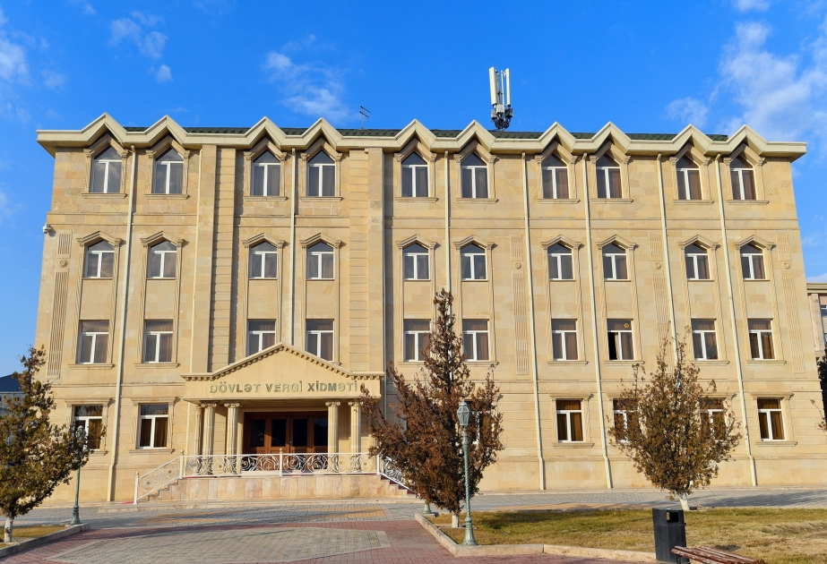

Naxçıvan MR Dövlət Vergi Xidmətində işə qəbulla bağlı müsabiqə elan edilib
Naxçıvan Muxtar Respublikası (MR) Dövlət Vergi Xidmətində işə qəbulla bağlı müsabiqə elan edilib. Dövlət Vergi Xidmətindən AZƏRTAC-a bildirilib ki, müsabiqənin keçirilməsində məqsəd Naxçıvan MR Dövlət Vergi Xidmətinin aparatında, Naxçıvan şəhər və ərazi vergilər idarələrində yerləşən strukturların kadr ehtiyacını qarşılamaq, eyni zamanda, potensiallı gəncləri işə cəlb etməkdir. İşə qəbul Azərbaycan Respublikası Prezidentinin 2005-ci il 15 aprel tarixli Fərmanı ilə təsdiq edilmiş “Dövlət vergi orqanlarına işə qəbul olunmaq üçün namizədlərin müsabiqəsinin keçirilməsi haqqında Əsasnamə”yə müvafiq qaydada, müsabiqə əsasında aparılır. Müsabiqə test imtahanı və müsahibədən ibarət olacaq. Müsabiqədə iştirak etmək istəyən namizədlər iyulun 13-dən avqustun 13- dək İqtisadiyyat Nazirliyi yanında Dövlət Vergi Xidmətinin və Naxçıvan MR Dövlət Vergi Xidmətinin rəsmi internet səhifələrində (www.taxes.gov.az və www.vergi.nakhchivan.az) yerləşdirilmiş elanda (https://www.taxes.gov.az/az/post/2655) göstərilən elektron ərizə formasını doldurmaqla qeydiyyatdan keçməlidirlər. Müsabiqənin test imtahanı mərhələsi 2023-cü il sentyabrın 9-da Dövlət İmtahan Mərkəzi tərəfindən təşkil olunacaq. İmtahandan uğurla keçən namizədlərə müsahibə mərhələsi barədə əlavə məlumat veriləcək. Qeyd olunub ki, yüksək intellektə, məntiqi düşünmə bacarığına və geniş dünyagörüşünə malik gənclərin müəyyən edilərək dövlət vergi orqanlarına işə qəbul olunması məqsədilə ötən il müsabiqə qaydalarında edilmiş bir sıra dəyişikliklər bu müsabiqə zamanı da əsas götürüləcək. Belə ki, hüquq sahəsi istisna olmaqla, digər sahələr üzrə namizədlər üçün ixtisas məhdudiyyəti götürülüb və qanunvericiliklə müəyyən edilmiş tələblər çərçivəsində ali təhsilə malik bütün vətəndaşların müsabiqədə iştirakına açıq və bərabər imkanlar yaradılıb. Bundan əlavə, əvvəlki illərdən fərqli olaraq, bütün ixtisaslar üzrə test imtahanının sual bankından vergilər və vergitutma üzrə suallar çıxarılıb, əvəzində namizədlərin dünyagörüşünü, məntiqi düşüncə səviyyəsini və bacarığını ölçən testlərdən ibarət yeni sual bazası hazırlanıb. Bu mərhələdə namizədlərə təqdim olunacaq sualları özündə əks etdirən ədəbiyyat siyahısı və sual nümunələri Naxçıvan MR Dövlət Vergi Xidmətinin rəsmi internet səhifəsində yerləşdirilib (https://bit.ly/edebiyyat). Müsabiqə başa çatdıqdan sonra nəticələr İqtisadiyyat Nazirliyi yanında Dövlət Vergi Xidmətinin və Naxçıvan MR Dövlət Vergi Xidmətinin rəsmi internet səhifəsi vasitəsilə ictimaiyyətə elan ediləcək. Müsabiqənin hər iki mərhələsindən uğurla keçən namizədlər kadr ehtiyatına daxil olunaraq həmin dövr üzrə vakant vəzifələrə təyin ediləcəklər. Vakant vəzifələrə təyin olunmayan namizədlərin kadr ehtiyatında saxlanılma müddəti 2 ildir.
Xəritədə göstər